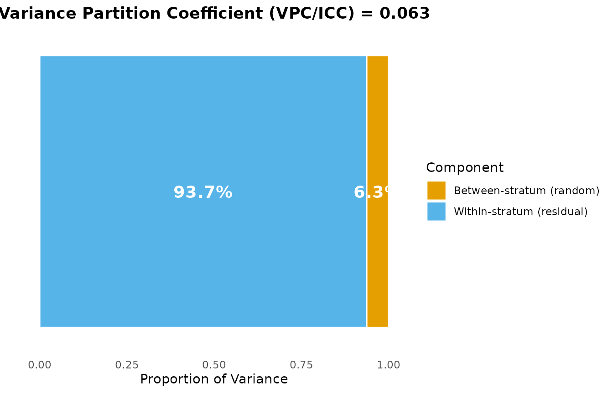
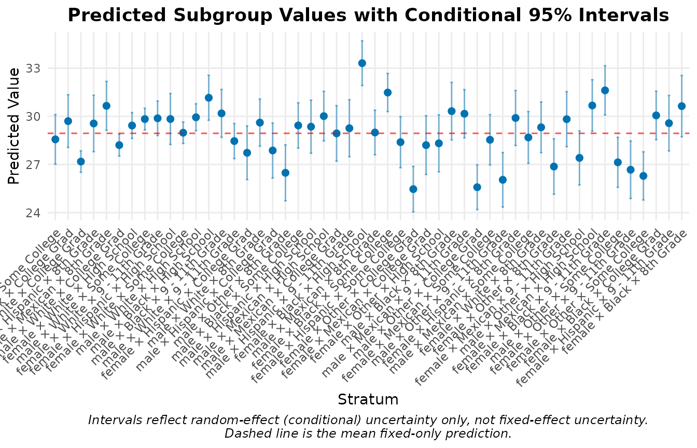
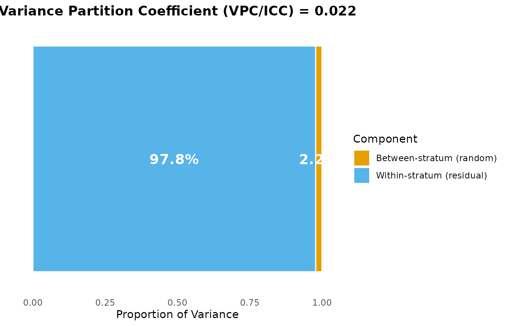
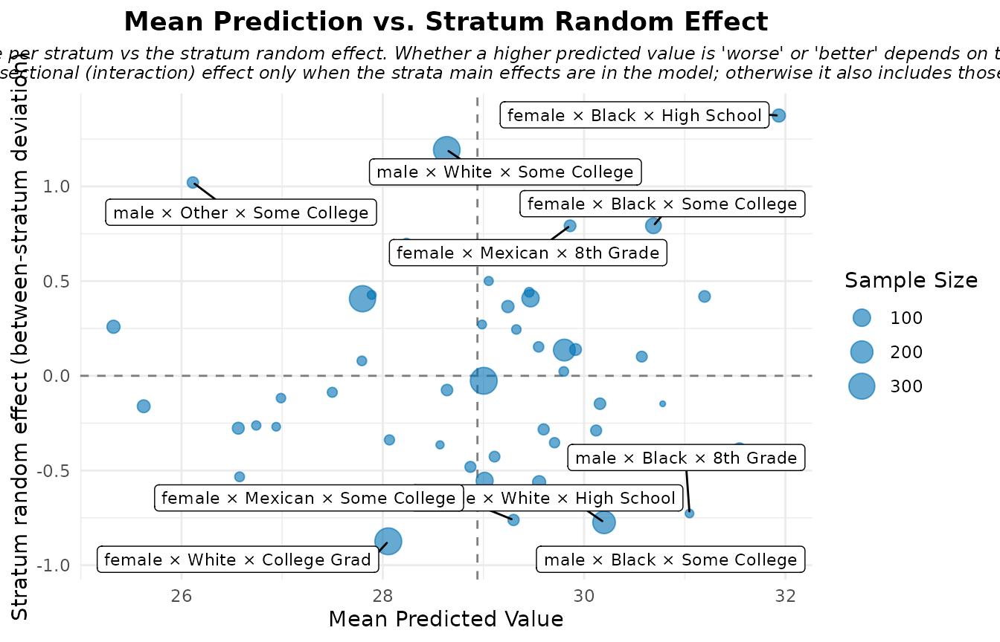
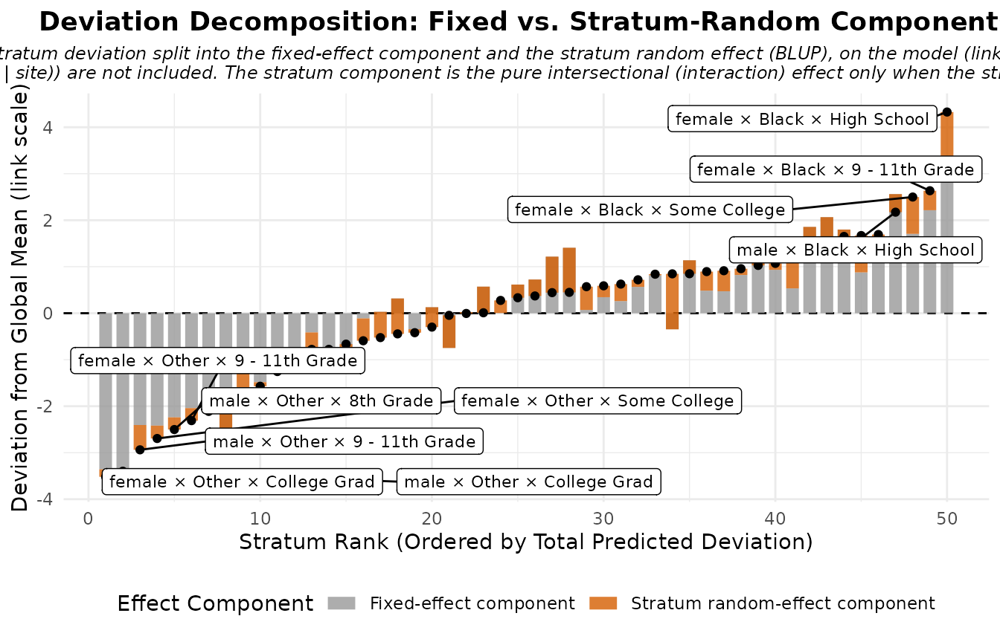
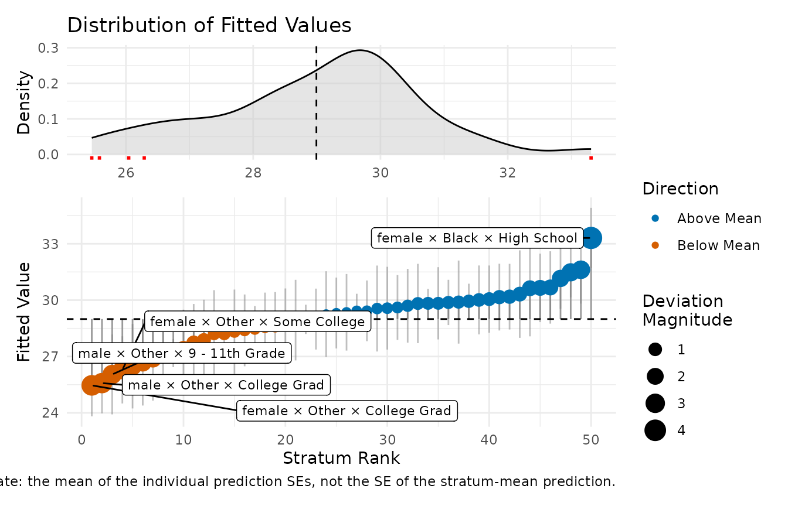
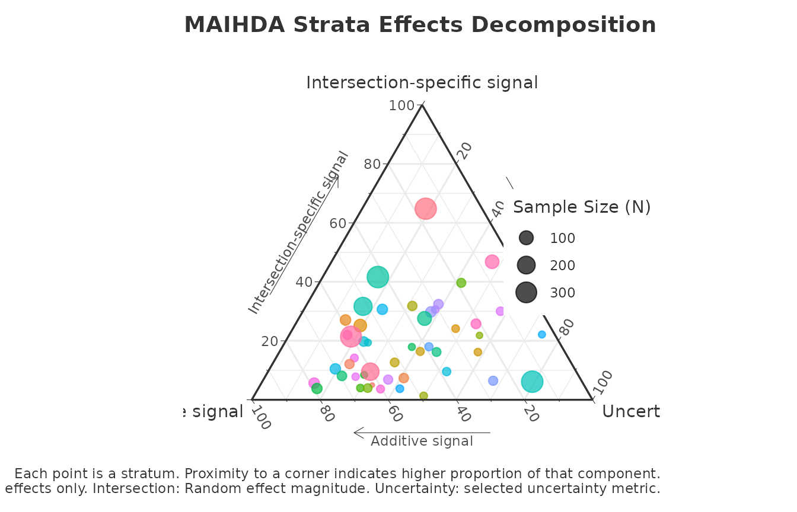
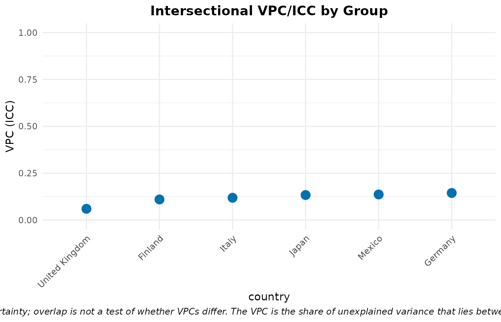
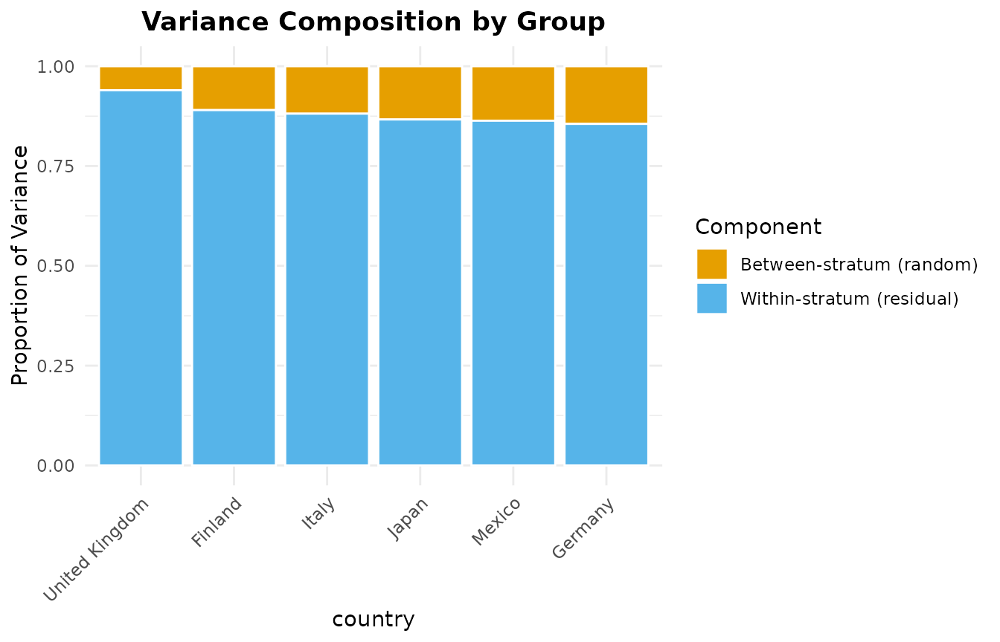

Introduction
The MAIHDA package provides specialized tools for conducting Multilevel Analysis of Individual Heterogeneity and Discriminatory Accuracy. This modern epidemiological approach is highly effective for investigating intersectional health inequalities and understanding how joint social categories (e.g., Race x Gender x Education) influence individual outcomes.
By utilizing multilevel mixed-effects models (via lme4
or brms), MAIHDA allows researchers to: 1. Automatically
construct intersectional strata. 2. Estimate between-stratum variance
and Variance Partition Coefficients (VPC). 3. Evaluate the Proportional
Change in Variance (PCV): a descriptive, model-dependent measure of how
much the between-stratum variance changes when additive main effects are
added (it is not a causal decomposition, and a negative PCV does not by
itself establish hidden structural inequality). 4. Launch an interactive
Shiny Dashboard for code-free analysis.
Installation
# Released version (CRAN):
install.packages("MAIHDA")
# Development version (GitHub):
# install.packages("remotes")
# remotes::install_github("hdbt/MAIHDA")Quick Start: the maihda() one-call workflow
If you just want the standard analysis, maihda() runs
the whole pipeline in a single call – it fits the model, summarises the
VPC/ICC and variance components, and (optionally) compares
intersectional inequality across a higher-level grouping variable. It
returns one object with print(), summary(),
and plot() methods.
library(MAIHDA)
data("maihda_health_data")
# Fit + variance summary in one call
analysis <- maihda(BMI ~ Age + (1 | Gender:Race:Education), data = maihda_health_data)
analysis # concise report (VPC/ICC, #strata)
#> MAIHDA Analysis
#> ===============
#>
#> Formula: BMI ~ Age + (1 | stratum)
#> Engine: lme4 | Family: gaussian
#> VPC/ICC: 0.0627
#> Strata: 50
#>
#> Use summary() for variance components and plot(type = ...) for figures.
summary(analysis) # full variance components
#> MAIHDA Model Summary
#> ====================
#>
#> Variance Partition Coefficient (VPC/ICC):
#> Estimate: 0.0627
#>
#> Variance Components:
#> component variance sd proportion
#> Between-stratum (random) 2.90 1.703 0.06268
#> Within-stratum (residual) 43.37 6.586 0.93732
#> Total 46.27 6.802 1.00000
#>
#> Fixed Effects:
#> term estimate
#> (Intercept) 28.20790
#> Age 0.01503
#>
#> Stratum Estimates (first 10):
#> stratum stratum_id label random_effect se
#> 1 1 male × Hispanic × Some College -0.245110 1.0419
#> 2 2 male × Black × College Grad 0.771975 1.1139
#> 3 3 female × White × College Grad -1.819926 0.3520
#> 4 4 male × Hispanic × 8th Grade 0.921381 1.3183
#> 5 5 female × Mexican × 8th Grade 1.823058 0.9510
#> 6 6 male × White × College Grad -0.743146 0.3572
#> 7 7 female × White × High School 0.004942 0.4191
#> 8 8 male × White × Some College 1.023286 0.3556
#> 9 9 female × White × 9 - 11th Grade 0.685130 0.6038
#> 10 10 female × Hispanic × High School 0.287026 1.0690
#> lower_95 upper_95
#> -2.28715 1.79693
#> -1.41123 2.95518
#> -2.50991 -1.12994
#> -1.66250 3.50526
#> -0.04088 3.68700
#> -1.44320 -0.04309
#> -0.81642 0.82631
#> 0.32630 1.72028
#> -0.49833 1.86859
#> -1.80812 2.38217
#> ... and 40 more strata
plot(analysis, type = "vpc") # any plot.maihda_model type works here
You can add a higher-level grouping variable to also compare across
its levels. maihda_country_data (PISA 2018) has a real
country grouping; this workflow has its own group comparison vignette, so here we
just point to it:
data("maihda_country_data")
by_country <- maihda(math ~ 1 + (1 | gender:ses), data = maihda_country_data,
group = "country")
by_country
plot(by_country, type = "group_vpc")The sections below walk through the same steps individually with
fit_maihda() and friends, which you can use directly when
you need finer control.
Real-World Example Analysis
The package includes a pedagogical subset of the National Health and
Nutrition Examination Survey (maihda_health_data). We will
use this to examine how Body Mass Index (BMI) varies across
intersectional demographic groups.
Note. The bundled
maihda_health_dataandmaihda_country_dataare for teaching only. They are non-random subsamples, and the package ignores the surveys’ weights and complex sampling design (and uses a single PISA plausible value), so the results below are not survey-representative and should not be read as substantive population findings.
Step 1 & 2: Create Intersectional Strata and Fit a Null MAIHDA Model
Use fit_maihda() to combine multiple social categories
directly in the random effect formula. Providing the variables in the
random effect combined with : allows the function to
automatically build the intersectional strata on the fly and fit the
multilevel model.
# PVC compares variance across models, so both models must use the same
# analytic sample. Keep complete cases for all variables used below.
health_complete <- maihda_health_data[complete.cases(
maihda_health_data[, c("BMI", "Age", "Gender", "Race", "Education", "Poverty")]
), ]
# Fit the initial Null model with auto-generated strata
model_null <- fit_maihda(
BMI ~ 1 + (1 | Gender:Race:Education),
data = health_complete,
engine = "lme4"
)
# Summarize the variance components (VPC)
summary_null <- summary(model_null)
print(summary_null)
#> MAIHDA Model Summary
#> ====================
#>
#> Variance Partition Coefficient (VPC/ICC):
#> Estimate: 0.0636
#>
#> Variance Components:
#> component variance sd proportion
#> Between-stratum (random) 2.932 1.712 0.06357
#> Within-stratum (residual) 43.187 6.572 0.93643
#> Total 46.118 6.791 1.00000
#>
#> Fixed Effects:
#> term estimate
#> (Intercept) 29.01
#>
#> Stratum Estimates (first 10):
#> stratum stratum_id label random_effect se
#> 1 1 male × Hispanic × Some College -0.3652 1.0426
#> 2 2 male × Black × College Grad 0.5847 1.1667
#> 3 3 female × White × College Grad -1.8639 0.3550
#> 4 4 male × Hispanic × 8th Grade 1.1454 1.3490
#> 5 5 female × Mexican × 8th Grade 1.9078 1.0173
#> 6 6 male × White × College Grad -0.7119 0.3652
#> 7 7 female × White × High School 0.2352 0.4374
#> 8 8 male × White × Some College 0.9413 0.3587
#> 9 9 female × White × 9 - 11th Grade 0.9152 0.6162
#> 10 10 female × Hispanic × High School 0.1229 1.0994
#> lower_95 upper_95
#> -2.40868 1.678302
#> -1.70198 2.871286
#> -2.55965 -1.168149
#> -1.49872 3.789553
#> -0.08613 3.901702
#> -1.42775 0.004003
#> -0.62207 1.092543
#> 0.23837 1.644306
#> -0.29260 2.122989
#> -2.03195 2.277736
#> ... and 40 more strataInterpretation: The resulting Variance Partition Coefficient (VPC or ICC) tells us what percentage of the total variance in BMI in the population lies between the intersectional social groups, rather than just within them.
Step 3: Evaluate Proportional Change in Variance (PCV)
To understand whether these intersectional inequalities are largely the sum of their parts (additive), we evaluate how much the between-stratum variance changes when the additive main effects are added to the model.
If the variance drops substantially (high PCV), the between-stratum differences are much smaller once the additive main effects are included. If it remains or even increases (negative PCV), the additive main effects account for little of it. Interpret this cautiously: the PCV is a model-dependent variance change, not a causal decomposition, and a low or negative value does not by itself prove a “true” intersectional interaction – it can also reflect suppression, rescaling (on the latent scale for non-Gaussian models), sample composition, or estimation uncertainty.
# Fit an adjusted model on the SAME analytic sample
model_adj <- fit_maihda(
BMI ~ Age + Gender + Race + Education + Poverty + (1 | Gender:Race:Education),
data = health_complete
)
# Point estimate of the proportional change in between-stratum variance
pcv_result <- calculate_pvc(model_null, model_adj)
print(pcv_result)
#> Proportional Change in Variance (PCV)
#> =====================================
#>
#> PCV: 0.6693
#>
#> Between-stratum variance:
#> Model 1: 2.931928
#> Model 2: 0.969511
#> Change: 1.962417 (66.93%)
#>
#> Interpretation (PCV is the proportional change in between-stratum
#> variance between the models; it is variance 'explained' only when Model 2
#> nests Model 1 by adding predictors on the same outcome, sample and strata):
#> Between-stratum variance is 66.9% lower in Model 2 than in Model 1.For publication-ready uncertainty, add parametric bootstrap confidence intervals. This refits the model many times, so it is not run when the vignette is built:
pcv_boot <- calculate_pvc(model_null, model_adj, bootstrap = TRUE, n_boot = 500)
print(pcv_boot)Step 4: Stepwise PCV Decomposition
Often, researchers want to know exactly which variable
explained the variance. Use the stepwise_pcv() function to
add covariates one-by-one and track the variance dynamically.
# Run a stepwise variance decomposition using the prepared data with strata
stepwise_results <- stepwise_pcv(
data = model_null$original_data,
outcome = "BMI",
vars = c("Age", "Gender", "Race", "Education", "Poverty")
)
print(stepwise_results)
#> Step Model Added_Variable Variance Step_PCV Total_PCV
#> 1 0 Null Model None (Intercept only) 2.9319281 0.000000000 0.000000000
#> 2 1 Model 1 Age 2.8627658 0.023589378 0.023589378
#> 3 2 Model 2 Gender 2.9232893 -0.021141634 0.002946462
#> 4 3 Model 3 Race 1.3016798 0.554720831 0.556032830
#> 5 4 Model 4 Education 0.9756602 0.250460705 0.667229160
#> 6 5 Model 5 Poverty 0.9695115 0.006302093 0.669326313Negative step PCVs in this table indicate an “unmasking”/suppression pattern: adding a variable increased the between-stratum variance. This is a model-dependent change in variance, not proof that a hidden structural inequality was causally revealed – a negative PCV can also reflect suppression, rescaling, sample composition, or estimation uncertainty, so interpret it cautiously alongside the fitted effects.
Step 5: Visualizations
The package provides multiple pre-configured, advanced visualization options for checking your model estimates natively mirroring the Shiny application logic. The dedicated plot interpretation vignette explains how to read each one.
# Predicted stratum values with 95% CIs
plot(model_adj, type = "predicted")
# Variance partition (VPC) visualization
plot(model_adj, type = "vpc")
# Mean predicted outcome against the stratum random effect
plot(model_adj, type = "risk_vs_effect")
# Additive versus Intersectional Effect decomposition
plot(model_adj, type = "effect_decomp")
# Individual Prediction Deviance Dashboard
plot(model_adj, type = "prediction_deviation")
The ternary diagnostic needs the optional ggtern
package, so it is only drawn when that package is installed:
# Ternary diagnostic: additive vs intersection-specific signal vs uncertainty
plot(model_adj, type = "ternary")
Step 6: Compare Intersectional Inequality Across Groups
When the data spans several higher-level contexts – countries,
regions, survey waves – you often want to know whether the
degree of intersectional inequality differs across them.
compare_maihda_groups() fits a separate intercept-only
MAIHDA model within each level of a grouping variable and reports the
VPC/ICC and variance components side by side.
By default the intersectional strata are defined once on the full
data (shared_strata = TRUE), so a stratum denotes the same
combination in every group. Shared definitions make the stratum
labels comparable across groups, but they are necessary rather
than sufficient for the VPCs themselves to be directly comparable: a
group need not contain every stratum, so two groups’ VPCs can be
estimated over different sets of populated strata, and
differences in residual variance and var_between still
matter (compare_maihda_groups() warns when groups end up
with different populated strata; see the group comparison vignette). This is a
stratified analysis (one model per group), not a
cross-classified model.
The bundled maihda_country_data (OECD PISA 2018) is
designed for exactly this: it asks how much the joint gender x
socioeconomic-status inequality in mathematics achievement
differs across six countries.
data("maihda_country_data")
group_cmp <- compare_maihda_groups(
math ~ 1 + (1 | gender:ses),
data = maihda_country_data,
group = "country"
)
group_cmp
#> MAIHDA Group Comparison
#> =======================
#>
#> Group variable: country
#> Engine: lme4 | Family: gaussian | Strata: shared/global
#>
#> group n n_strata vpc var_between var_other var_residual status
#> Finland 600 6 0.10994 785.8 0 6361 ok
#> Germany 600 6 0.14448 1271.6 0 7529 ok
#> Italy 600 6 0.11890 1065.3 0 7895 ok
#> Japan 600 6 0.13344 1032.3 0 6704 ok
#> Mexico 600 6 0.13649 771.5 0 4881 ok
#> United Kingdom 600 6 0.06011 470.5 0 7357 ok
# VPC by country (add bootstrap = TRUE for per-group confidence intervals)
plot(group_cmp, type = "vpc")
# Between- vs within-stratum variance share by country
plot(group_cmp, type = "components")
Groups smaller than min_group_n, or with fewer than two
populated strata, are skipped with a warning rather than producing an
unstable VPC; a group with no between-stratum variation reports a VPC of
0 instead of erroring.
Where to next
This vignette is the hub for the rest of the documentation:
- MAIHDA for binary outcomes – logistic MAIHDA, the latent-scale VPC, and a discriminatory-accuracy (AUC) recipe.
- Interpreting MAIHDA plots and diagnostics – how to read every plot type shown above, and what not to conclude from each.
-
Comparing intersectional
inequality across groups – the full
compare_maihda_groups()/maihda(group = ...)workflow. - Interactive data analysis – the no-code Shiny dashboard.
Interactive Shiny App
The MAIHDA package ships with a fully-featured, interactive Shiny Dashboard.
You can upload your own data (CSV, SPSS .sav, Stata
.dta), dynamically select variables, and compute Stepwise
PCV tables and prediction plots.
# Launch the interactive interface
run_maihda_app()References
Evans, C. R., Williams, D. R., Onnela, J. P., & Subramanian, S. V. (2018). A multilevel approach to modeling health inequalities at the intersection of multiple social identities. Social Science & Medicine, 203, 64-73.
Merlo, J. (2018). Multilevel analysis of individual heterogeneity and discriminatory accuracy (MAIHDA) within an intersectional framework. Social Science & Medicine, 203, 74-80.